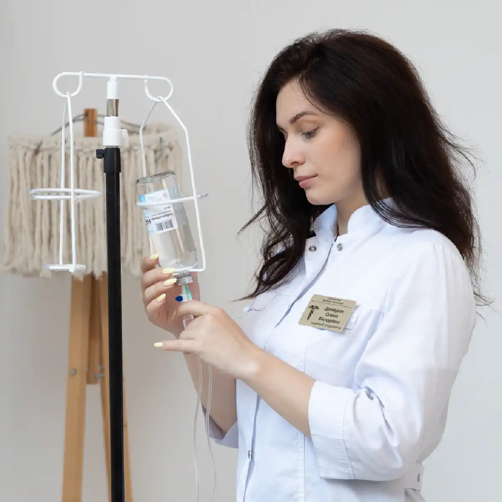

+38(068) 79 72 782
+38(068) 79 72 782Лікування жіночого алкоголізму Київ
Ваше здоров'я на першому місці!


Безкоштовна консультація, працюємо цілодобово 24/7
Ваше здоров'я на першому місці!

Жіночий алкоголізм — це медичне захворювання, яке потребує професійного та комплексного підходу. На відміну від чоловічої залежності, у жінок формування тяги до алкоголю часто відбувається швидше, а наслідки для фізичного та психічного здоров’я розвиваються інтенсивніше. Лікування жіночого алкоголізму в Києві включає детоксикацію, медикаментозну підтримку, психотерапію та реабілітацію з урахуванням особливостей жіночого організму.
Жіночий організм інакше реагує на етанол: інтоксикація розвивається швидше, токсичне навантаження на печінку та серцево-судинну систему вище, а гормональні коливання можуть посилювати перепади настрою і тривожність. На тлі регулярного вживання швидше формуються порушення сну, депресивні стани, проблеми з пам’яттю та концентрацією уваги. Нерідко залежність тривалий час залишається прихованою, що ускладнює діагностику та відкладає початок лікування. Своєчасне звернення до лікаря-нарколога дозволяє запобігти ускладненням з боку серця, печінки, нервової системи та психоемоційної сфери. На первинному етапі проводиться медична оцінка стану: уточнюється тривалість вживання, наявність запоїв, супутні захворювання, рівень тривожності та депресії, ризики абстинентного синдрому. Це дозволяє підібрати безпечну та ефективну тактику терапії.
Формування алкогольної залежності у жінок пов’язане з поєднанням біологічних, психологічних та соціальних факторів. На відміну від чоловіків, у жінок залежність нерідко розвивається швидше і перебігає більш приховано, що ускладнює своєчасне звернення за медичною допомогою. Основні причини жіночого алкоголізму:
Додатково значущу роль відіграють соціальні очікування та високе навантаження. Жінки часто поєднують професійну діяльність, ведення побуту та турботу про сім’ю. Постійне відчуття відповідальності, відсутність повноцінного відпочинку та підтримки можуть призводити до внутрішнього виснаження. У таких умовах алкоголь починає сприйматися як «швидкий спосіб» розслаблення або емоційного розвантаження. Окремо варто відзначити вплив прихованих психоемоційних проблем. Нерідко вживання спиртного стає способом впоратися з внутрішньою тривогою, невпевненістю в собі, почуттям провини або хронічною втомою. Поступово формується психологічна прив’язаність: без звичної дози стає складно розслабитися, заснути або стабілізувати настрій.
Жіночий організм більш чутливий до етанолу: при однаковій кількості алкоголю інтоксикація розвивається швидше. Це пов’язано з особливостями обміну речовин, меншим об’ємом води в організмі та активністю ферментів, що розщеплюють спирт. Суттєву роль відіграє і гормональний фон — коливання рівня гормонів можуть посилювати реакцію на алкоголь та прискорювати формування залежності. У результаті залежність може формуватися непомітно, але прогресувати стрімко. Спочатку це можуть бути епізодичні прийоми алкоголю «для зняття стресу», потім — регулярне вживання, збільшення дози та поява вираженої тяги. З часом розвиваються порушення сну, перепади настрою, погіршення пам’яті, проблеми з тиском, серцево-судинною системою та печінкою.
На ранніх етапах проблема часто маскується під «помірне вживання». Жінка може пояснювати прийом алкоголю втомою, необхідністю розслабитися після роботи або «келихом для сну». При цьому зовні соціальна активність і звичний спосіб життя можуть зберігатися, що створює ілюзію контролю над ситуацією. Однак з часом формується стійка психологічна та фізична залежність. Поступово з’являються характерні симптоми:
Зростання толерантності означає, що попередні дози вже не дають очікуваного ефекту. Щоб відчути розслаблення або покращення настрою, потрібно більше алкоголю. Це один із перших тривожних сигналів, що вказують на формування залежності. Вживання наодинці також є важливою ознакою. Якщо раніше алкоголь асоціювався зі святами або зустрічами, то з часом він починає використовуватися як спосіб впоратися з внутрішніми переживаннями без сторонніх. Такий формат вживання найчастіше свідчить про психологічну прив’язаність.
Дратівливість, тривожність і внутрішнє напруження за відсутності спиртного свідчать про формування абстинентних проявів. Жінка може відчувати занепокоєння, запальність, зниження концентрації, підвищену чутливість до стресу. Порушення сну — ще один частий симптом. Попри поширений міф про «розслаблюючий» ефект алкоголю, він порушує структуру сну: засинання може відбуватися швидше, але сон стає поверхневим, з частими пробудженнями та відчуттям втоми вранці. З часом з’являються перепади настрою, емоційна нестабільність, схильність до плаксивості або агресії. Можуть посилюватися тривожні та депресивні прояви.
Виділяють кілька стадій розвитку жіночого алкоголізму, кожна з яких відрізняється вираженістю симптомів і глибиною порушень.
На другій і третій стадії необхідна професійна медична допомога. Самостійні спроби припинити вживання можуть бути небезпечними через ризик тяжкого абстинентного синдрому та ускладнень з боку серця і нервової системи. Комплексне лікування, що включає детоксикацію, медикаментозну підтримку та психотерапію, дозволяє стабілізувати стан і знизити ризик подальшого прогресування захворювання.
Інфузійна терапія — один із перших етапів лікування алкогольної залежності, особливо за наявності вираженої інтоксикації або абстинентного синдрому. Введення розчинів внутрішньовенно дозволяє швидше стабілізувати стан і знизити ризики ускладнень з боку внутрішніх органів. Крапельниці від алкоголю допомагають:
Під час запою або регулярного вживання алкоголю в організмі накопичуються токсичні продукти розпаду етанолу. Це призводить до зневоднення, порушення обмінних процесів, дефіциту мікроелементів і вітамінів. Інфузійна терапія спрямована на відновлення рідини, корекцію електролітів та покращення метаболізму. Додатково до складу можуть включатися препарати для підтримки серцево-судинної системи, вітаміни групи B, засоби для нормалізації сну та зниження тривожності. Це допомагає зменшити слабкість, тремтіння, головний біль, дратівливість та інші симптоми абстиненції.
Лікар підбирає склад індивідуально, враховуючи вік, стадію залежності, загальний стан здоров’я та супутні захворювання. Перед проведенням процедури проводиться оцінка тиску, пульсу, рівня сатурації та інших показників. Такий підхід дозволяє зробити лікування безпечним і максимально ефективним. Крапельниці можуть проводитися як у клініці, так і вдома. Домашній формат особливо актуальний при вираженій слабкості, тривожності або необхідності дотримання конфіденційності. При більш тяжкому стані перевага може надаватися лікуванню в умовах медичного закладу під наглядом спеціалістів. Інфузійна терапія не є самостійним лікуванням залежності, але відіграє важливу роль у стабілізації стану та підготовці до подальших етапів — медикаментозної підтримки, психотерапії та реабілітації.
Вартість лікування жіночого алкоголізму в Києві починається від 2700 грн.
| Популярні послуги | Ціна |
|---|---|
| Консультація нарколога | Від 1500 грн |
| Крапельниця від алкоголю | Від 2700 грн |
| Виведення із запою вдома | Від 2700 грн |
| Кодування від алкоголю | Від 6000 грн |
Конфіденційність — важливий фактор для жінок, які побоюються розголосу та можливих соціальних наслідків. Страх осуду з боку оточуючих, колег або навіть близьких людей нерідко стає причиною відкладання звернення за медичною допомогою. Саме тому анонімний формат лікування відіграє ключову роль у формуванні довіри та готовності розпочати терапію. Анонімне лікування включає:
Виїзд спеціаліста здійснюється у звичайному одязі та на транспорті без медичної символіки, що дозволяє зберегти приватність звернення. Уся інформація про стан пацієнтки та проведене лікування належить до категорії лікарської таємниці й не передається роботодавцям, родичам або іншим організаціям без згоди пацієнтки. Медична документація ведеться відповідно до чинного законодавства про захист персональних даних. Доступ до неї мають лише спеціалісти, безпосередньо залучені до лікування. Це дозволяє забезпечити безпеку інформації та повагу до особистих меж жінки.
Звернення за допомогою не впливає на працевлаштування та соціальний статус. Лікування алкогольної залежності — це медична допомога, спрямована на відновлення здоров’я. Своєчасна терапія, навпаки, допомагає зберегти професійну діяльність, покращити якість життя та запобігти серйозним ускладненням. Створення умов повної конфіденційності знижує рівень тривожності, зміцнює довіру до лікаря та підвищує ймовірність того, що жінка наважиться розпочати лікування без страху розголосу.
Психотерапія — один із ключових етапів лікування жіночого алкоголізму, оскільки дозволяє працювати не лише з симптомами залежності, а й з її глибинними причинами. Медикаментозна стабілізація допомагає відновити фізичний стан, однак без психологічної підтримки ризик повернення до вживання залишається високим.
Психотерапія знижує ризик повторного вживання та формує нові стратегії стресостійкості. Жінка навчається справлятися з емоційними навантаженнями без алкоголю, вибудовувати здорові стосунки, планувати відпочинок і піклуватися про власний психологічний ресурс. Комплексний підхід дозволяє не лише досягти ремісії, а й зберегти її в довгостроковій перспективі.
Медикаментозна терапія є важливою частиною комплексного лікування жіночого алкоголізму. Вона спрямована на зниження патологічної тяги до спиртного, стабілізацію психоемоційного стану та підтримку внутрішніх органів, які зазнають токсичного навантаження. Медикаментозна терапія може включати:
Препарати для зниження тяги допомагають зменшити нав’язливе бажання вжити алкоголь і знизити ризик зривів. Вони впливають на нейромедіаторні системи мозку, що беруть участь у формуванні залежності. Засоби для стабілізації емоційного фону застосовуються при тривожності, дратівливості, порушеннях сну або депресивних проявах. Корекція цих станів особливо важлива у жінок, оскільки емоційні коливання часто стають тригером для вживання. Підтримуюча терапія для печінки та нервової системи спрямована на відновлення функцій органів після тривалої інтоксикації. Використовуються препарати, що покращують метаболічні процеси, сприяють регенерації клітин печінки та нормалізації роботи нервової системи.
Методи кодування можуть застосовуватися як додатковий інструмент у межах комплексного лікування. Вони використовуються за медичними показаннями та лише за наявності добровільної згоди пацієнтки. Вибір методу залежить від стадії залежності, стану здоров’я та мотивації до тверезості. Призначення проводиться суворо індивідуально після обстеження. Лікар враховує вік, стадію захворювання, гормональний статус, супутні захворювання, переносимість препаратів і можливі протипоказання. Такий персоналізований підхід підвищує ефективність терапії та знижує ризик побічних реакцій.
Реабілітаційний етап — це важлива частина комплексного лікування жіночого алкоголізму, спрямована на закріплення досягнутих результатів і формування стійкої ремісії. Після детоксикації та медикаментозної стабілізації необхідно відновити психологічну рівновагу, соціальні зв’язки та навички життя без алкоголю. Групові заняття допомагають знизити відчуття ізоляції та сорому. Жінка отримує підтримку, бачить досвід інших людей і навчається відкрито говорити про труднощі без страху осуду.
Індивідуальна робота зі спеціалістом дозволяє глибше опрацювати особисті причини залежності, внутрішні конфлікти, травматичний досвід і особливості емоційного реагування. Формування навичок тверезого життя включає навчання управлінню стресом, плануванню часу, відновленню режиму сну та відпочинку, розвитку нових інтересів і здорових способів отримання позитивних емоцій.
Відновлення сімейних стосунків відіграє важливу роль, оскільки залежність часто руйнує довіру та емоційну близькість. За необхідності проводиться сімейне консультування, спрямоване на вибудовування конструктивного діалогу та підтримку в період ремісії. Профілактика зривів передбачає виявлення тригерних ситуацій, навчання стратегіям самоконтролю та формування чіткого плану дій при виникненні тяги. Тривалість програми підбирається індивідуально. Вона залежить від стадії залежності, тривалості вживання, психологічних особливостей і рівня соціальної підтримки. Грамотно вибудований реабілітаційний етап значно підвищує ймовірність довгострокової ремісії та повернення до повноцінного життя.
Домашній формат лікування може бути зручним і ефективним варіантом на певних етапах терапії, особливо якщо стан пацієнтки дозволяє проводити допомогу поза стаціонаром. Такий підхід поєднує медичну безпеку та максимальний психологічний комфорт. Якщо немає виражених соматичних порушень, тяжкого абстинентного синдрому або загрози ускладнень з боку серця та нервової системи, лікування може проводитися вдома під контролем лікаря. Це особливо актуально при вираженій слабкості, тривожності або коли важливо мінімізувати стрес.
Конфіденційність у домашньому форматі зберігається повністю: візит здійснюється без привернення уваги, інформація про пацієнтку захищена лікарською таємницею. Лікар проводить огляд, оцінює загальний стан, вимірює тиск, пульс, за потреби — рівень сатурації, уточнює анамнез і супутні захворювання. Після цього призначається детоксикаційна терапія, підбирається медикаментозна підтримка та складається індивідуальний план подальшого лікування.
Важливо розуміти, що при ознаках тяжких ускладнень, вираженій інтоксикації або нестабільних показниках може бути рекомендована госпіталізація. Рішення завжди приймається виходячи з безпеки пацієнтки. Домашній формат — це не лише зручність, а й можливість розпочати лікування своєчасно, не відкладаючи допомогу через страх розголосу або фізичну слабкість.
Важливо уникати тиску, докорів і звинувачень. Жорстка критика, погрози або ультиматуми частіше викликають захисну реакцію та заперечення проблеми. При алкогольній залежності людина нерідко відчуває внутрішній сором і почуття провини, тому агресивний тон може лише посилити дистанцію та опір. Ефективніше:
Спокійна розмова про здоров’я допомагає перевести фокус із моральної оцінки на медичну сторону питання. Можна говорити про самопочуття, сон, тиск, втому — без ярликів і звинувачень. Пропозицію консультації лікаря краще формулювати як підтримку: «Давай просто поговоримо зі спеціалістом і дізнаємося, які є варіанти». Навіть одна консультація може стати першим кроком до усвідомлення проблеми.
Акцент на турботі особливо важливий. Формулювання на кшталт «ми переживаємо за твоє здоров’я» сприймаються м’якше, ніж «ти все руйнуєш». Підтримуюча позиція знижує рівень тривоги та опору. Мотиваційна бесіда зі спеціалістом допомагає делікатно опрацювати сумніви, страхи та внутрішні бар’єри. Лікар або психолог може пояснити механізми залежності та перспективи лікування в нейтральному професійному форматі. Рання підтримка сім’ї значно підвищує ймовірність згоди на терапію. Коли жінка відчуває не тиск, а розуміння і готовність допомогти, у неї формується більше довіри та мотивації до змін. Підтримка близьких у період лікування та реабілітації також знижує ризик рецидиву й допомагає закріпити стійку ремісію.
Кожна пацієнтка потребує персонального підходу, оскільки причини формування залежності, стадія захворювання, стан здоров’я та психологічні особливості можуть суттєво відрізнятися. Універсальних схем лікування не існує — ефективна терапія будується на основі комплексної медичної оцінки та індивідуального плану. Детоксикація проводиться за наявності інтоксикації або абстинентного синдрому. Її завдання — стабілізувати стан, знизити токсичне навантаження та підготувати організм до подальшого лікування.
Медикаментозна терапія підбирається з урахуванням віку, гормонального статусу, супутніх захворювань і вираженості тяги до алкоголю. Препарати можуть бути спрямовані на зниження залежності, нормалізацію сну, зменшення тривожності та підтримку внутрішніх органів. Психотерапія допомагає виявити глибинні причини вживання, опрацювати стресові фактори, підвищити самооцінку та сформувати стійку мотивацію до тверезості. Це ключовий елемент довгострокового результату.
Реабілітація спрямована на відновлення соціальної активності, вибудовування здорових стосунків і формування навичок життя без алкоголю. На цьому етапі закріплюються нові моделі поведінки та стресостійкості. Профілактика рецидивів включає регулярне спостереження спеціаліста, підтримуючі консультації та чіткий план дій при виникненні ризику зриву. Комплексний формат забезпечує стійкий результат, оскільки впливає одночасно на фізичні, психологічні та соціальні аспекти залежності. Такий підхід підвищує ймовірність тривалої ремісії та повноцінного повернення до активного життя.
Сім’я відіграє ключову роль у процесі одужання, особливо при лікуванні жіночого алкоголізму. Підтримуюче та стабільне середовище значно підвищує шанси на тривалу ремісію. Водночас конфлікти, недовіра або постійні докори можуть посилювати стрес і провокувати повернення до вживання.
Сімейні консультації допомагають налагодити діалог, знизити рівень взаємних претензій і розібратися в накопичених образах. Спеціаліст пояснює механізми залежності та навчає родичів правильній тактиці поведінки. Формування здорової атмосфери вдома включає поважне спілкування, передбачуваність, дотримання особистих меж і підтримку нових тверезих звичок. Важливо поступово відновлювати довіру, не повертаючись до постійного контролю та підозр.
Виключення провокуючих факторів передбачає відмову від зберігання алкоголю вдома, обмеження участі в заходах із вживанням спиртного на ранніх етапах ремісії та зниження стресового навантаження. Емоційна підтримка без тиску означає визнання зусиль жінки та її кроків до одужання. Підтримка має бути стабільною, але без гіперопіки чи ультиматумів. Системна робота з оточенням знижує ризик повторних зривів, оскільки залежність зачіпає не лише саму людину, а й її найближчий соціальний простір. Коли сім’я стає частиною терапевтичного процесу, відновлення проходить більш стійко та гармонійно.
Клініка UmbrellaPlus у Києві надає комплексну наркологічну допомогу жінкам з алкогольною залежністю. Програма лікування будується з урахуванням фізіологічних і психологічних особливостей жіночого організму та включає всі необхідні етапи — від стабілізації стану до повноцінної реабілітації. Лікування включає детоксикацію, медикаментозну підтримку, психотерапію та реабілітаційні програми. Такий поетапний підхід дозволяє не лише усунути фізичну залежність, а й опрацювати глибинні причини вживання, знизити ризик рецидиву та сформувати стійку ремісію.
Анонімність гарантує збереження конфіденційності та захист персональних даних. Звернення за допомогою не впливає на соціальний статус і працевлаштування. Цілодобовий формат роботи дозволяє отримати медичну допомогу при погіршенні стану в будь-який час доби. Виїзд додому особливо актуальний при вираженій слабкості, тривожності або необхідності зберегти повну приватність лікування. Індивідуальний підхід передбачає ретельну діагностику, підбір безпечної схеми терапії та врахування супутніх захворювань. Супровід на всіх етапах терапії допомагає пацієнтці відчувати підтримку спеціалістів від моменту детоксикації до завершення реабілітаційної програми. Якщо ви шукаєте професійне лікування жіночого алкоголізму в Києві — важливо не відкладати звернення до спеціаліста. Своєчасна медична допомога дозволяє зберегти здоров’я, відновити емоційну рівновагу та повернутися до повноцінного, активного життя.
Телефон для консультації лікаря: +38(050-021-69-57)

Так, ми суворо дотримуємося повної конфіденційності на всіх етапах лікування. Інформація про пацієнта, діагноз та проходження терапії не передається третім особам. Звернення до нас не тягне за собою постановку на облік. Ви можете бути впевнені у безпеці та анонімності.
Програма лікування розробляється індивідуально після консультації з фахівцем. Враховуються вид залежності, її тривалість, фізичний та психологічний стан пацієнта. Такий підхід дозволяє підвищити ефективність терапії та знизити ризик зриву. Ми не використовуємо шаблонні рішення.
Так, ми супроводжуємо пацієнтів і після основного курсу лікування. Проводяться консультації, рекомендації щодо адаптації та профілактики рецидивів. За потреби можлива подальша психологічна підтримка. Це допомагає зберегти результат та повернутися до повноцінного життя.
Анонимно

Никакими усилиями самостоятельно я не смогла преодолеть запой, и наступала ломка, сопровождаемая повышенным давлением и пульсом. Тогда я решила обратиться за помощью в клинику. Врачи оказали мне неоценимую поддержку! Уже прошел месяц, и я не только не употребляю алкоголь, но даже не испытываю к нему желания!
Анонимно
Могу с уверенностью порекомендовать данный центр для тех, кто ищет помощь при выводе из запоя. Я неоднократно обращался к ним и могу сказать, что цена соответствует качеству услуг. После проведения капельницы в клинике, вся тяга к алкоголю проходит, и я чувствую себя гораздо лучше. Это действительно эффективный метод, и я благодарен клинике за их профессионализм и заботу!
Анонимно
Неоднократно я пытался бросить алкоголь самостоятельно, но каждый раз уговаривал себя продолжать. Я сначала ограничивался одной бутылкой в день, потом двумя, и в итоге вновь попадал в запой. Но в итоге, я смог прекратить употребление алкоголя только после того, как обратился в центр Амбрелла и заказал у них услугу вывода из запоя. Уже не пью 3 месяца и удалось полностью восстановиться. Благодарю врача который меня вел - Алексея Валерьевича.
Анонимно
Здравствуйте! Я хотел бы выразить свою искреннюю благодарность клинике за быстрое и профессиональное освобождение моего мужа пивного рабства! Ранее у меня уже не было никаких надежд на его выздоровление. Однако, благодаря вашим перспективным методам лечения, мы теперь идем к полному отказу от алкоголя. Вы дали нам новую надежду и оказали неоценимую помощь! Спасибо вам за все!
Анонимно
Я долгое время страдал от запоев и не мог справиться с этой проблемой. Однако, когда я обратился в этот центр, они быстро помогли мне вернуться на ноги, и самое главное - предоставили мне возможность не возвращаться к запоям. Уже почти полгода я не испытываю запоев! Это для меня настоящее чудо, я никогда не думал, что смогу так преодолеть свои проблемы. Большое спасибо центру Амбрелла!
Анонимно
Благодарю ваш центр Амбрелла за оперативное и высококачественное лечение! Женский алкоголизм - это настоящее горе, с которым невозможно справиться в одиночку. Я уже потеряла надежду, но благодаря вашей помощи, она вернулась ко мне! Отдельная благодарность врачу Станиславу Вячеславовичу, а также благодарность Богу за то, что он послал мне такое чудо как ваша центр! Спасибо вам всем!
Анонимно
Хочу выразить благодарность врачу Владиславу Алексеевичу за то, что вы избавили меня от этого ужаса. Я уже был в отчаянии, перепробовал множество клиник и центров, но только здесь я наконец получил настоящую помощь! Алкоголь полностью разрушил меня, и если бы не ваша помощь, я, возможно, уже не был бы жив. С вами я смог вернуть себе жизнь и буду благодарен вам всегда!
Номер телефону:
+380 (68) 797 27 82
+380 (50) 021 69 57
Адресу наркологічного центра вашого міста уточнюйте за
телефоном
Працюємо: Київ, Одеса, Львів, Харків, Дніпро, Запоріжжя,
Черкасах, Чугуєві, Чорноморську, Кам'янському
Telegram: t.me/umbrellaplus
Графік работы: Цілодобово